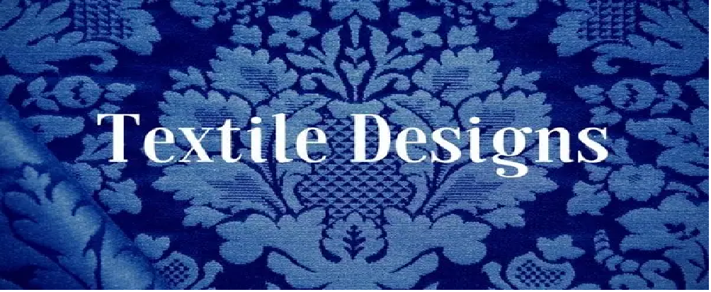
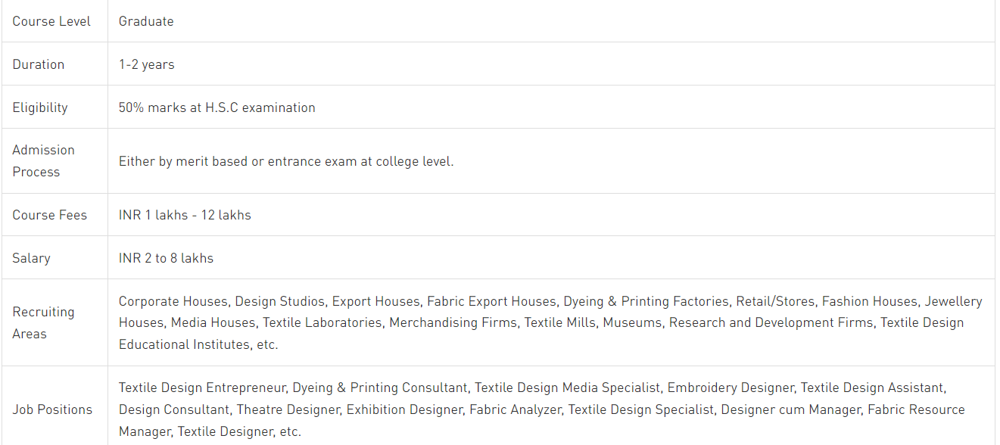
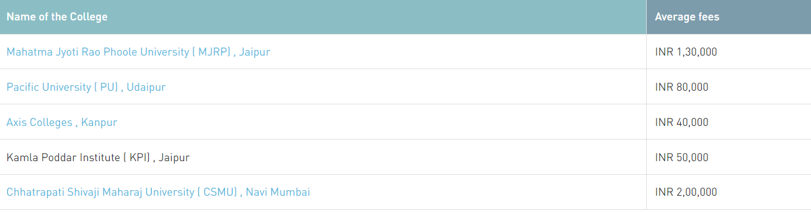
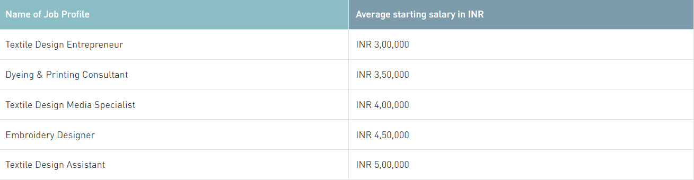

Diploma in Textile Design

Diploma in Textile Design is a 1 or 2 year long course depending on the university where candidates learn about various aspects of designing a Yarns, threads or Textile of any fabric they desire. Textile Design is a skilled field in the Textile sectors.
Admission to Diploma in Textile Design is offered on the basis of personal interview and qualifying marks in the respected entrance examination. The eligibility criteria of candidates to apply in different colleges or universities are at least 55 % marks in the H.S.C examination in any stream from a recognised board.
The average fee for this course is INR 1 Lakhs to 12 Lakhs for the span of 1 year.
Candidates who want to become Textile Application Developer, Layout Analyst, Textile Marketing Analyst, Front End Textile Developers mostly pursue this course. The starting salary after Diploma in Textile Design is about INR 2 lakhs to 8 lakhs per annum.
Diploma in Textile Design: Course Highlights

Why study Diploma in Textile Design?
Textile Design is dominant as it influences how your spectators perceive your brand. The fancy you make Threads or Yarns, into any fabric they desire and know about your business.
While other fields have seen a decline in growth, Textile Design fields have seen a growth of 27%.
Being a Textile designer will offer you a sense of self – rule, and dignity by making companies achieve their online success goals or targets. You also have numerous opportunities to tap at your innovative side and paid well for it.
Moreover you are personnel having opportunity to work from anywhere with different fields and clients.
Diploma in Textile Design: Course Advantages
The diploma in Textile design comes with several skills like learning to analyse a Fabric and visualization with several elements in the Fabric, learning to read a colour palette, learning to match colours to tones, understanding yarns and threads etc.
These skills help in the long run, whether as an assistant designer or a Textile decorator. The prime benefit is that the course duration is short but the basic principles behind Textile design and Fabric management are communicated during the same
Apart from job prospects, one can also pursue an advanced diploma in Textile design at a later stage
Diploma in Textile Design: Admission Process
Admissions in Diploma courses are also done through both merit and entrance exams.
Diploma in Textile Design: Eligibility Criteria
Candidates must have cleared the equivalent exam for their desired college.
Candidates should have a science field in class 12th.
They must qualify class 12th with a minimum of 55% marks from a recognized board.
For admission in some colleges, students are also required to qualify the entrance exam.
Diploma in Textile Design: Top Colleges
Many colleges are offering this course in India. Some of the top colleges offering this course are listed below –

Diploma in Textile Design: Tips to get Best College
To get admission into a good college one needs to ensure to have scored more than 90% at the Intermediate level.
Aspirants should sort their college of preference on the basis of the topics taught in curriculum, Faculty, location, Fee and the Location.
After selecting the top five colleges, they must periodically review the update on the following college's website.
Diploma in Textile Design: Job Prospects
The table below lists down some of the most common jobs along with their role and average starting salary:

Diploma in Textile Design: Future scope
After completing the Diploma (Textile Design) course. One can continue doing their further study and go for a Postgraduate and Ph.D. It will enhance their language skills and provide more knowledge. Graduation can work in the government sector as well as the private sector.
PG Diploma/MBA: If a student wants to continue in the same field of education, the second program of choice is a PGDM. It is a two years duration course and the eligibility criteria include having a Diploma Degree in related disciplines.
PhD: If candidates want to go into the teaching profession they can pursue PhD after post graduation. It is a three to five years duration course and the eligibility criteria include having a Diploma Degree in related disciplines.